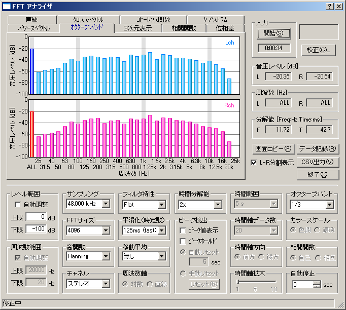

DSSF3 > RA > リファレンス
FFTアナライザ
- 『FFTアナライザ』共通画面の説明
- 測定ウインドウの説明
- マイク校正画面
- データ記録画面
FFTアナライザでは2chのスペクトルアナライザ、オクターブバンドアナライザ（1/1から1/24オクターブを選択可能）、3次元表示(時間-周波数-エネルギー）、自己相関、相互相関のリアルタイム表示機能などが可能です。

データ保存、画像記録、印刷に関しては、別売のマルチメディアライブラリ(MMLIB)を使用します。
MMLIBは、同時実行中のDSSF3からワンタッチで画像を取り込む機能を持っています。画像についてはDSSF3はMMLIBに任せていますので、是非組み合わせて、一緒にご利用ください。ただの画像ソフトというより、測定画像をメール送信などする場合、自動でサイズや送信を行いますので、あるいはデータ比較など、論文や、資料なども入れておくと、DSSF3と同様に測定現場に持ち込むことが可能です。これらは、DSSF3とあわせて使用するために、多くの機能が専門に開発されています。DSSF3同様に非常に優れたソフトで安価です。うまく使いこなすと、すばらしい効果を発揮しますので、測定システム用に是非ご使用ください。
MMLIB以外のその他Windowsアプリケーションを使用される場合は、クリップボード経由で行います。その場合取り込む画面を指定して ALTキー ＋ PrintScreenキーの二つのキーを同時に押して、いったんクリップボードに取り込み、貼り付けます。
Shiftキー ＋ PrintScreen キー、この二つのキーを同時に押すとデスクトップ画面をそのままクリップボードにとりこめます。それらをペイントプログラムなどに貼り付けて加工印刷します。
（WAVEファイル、CD）
この場合、シグナルジェネレーターの発生信号を、レコーダーを使用してWAVEファイルやCDなどにデジタルコピーすれば、シグナルジェネレータのかわりにWAVEファイルやCDの試験信号を使用して測定を行うことができます。
（同時動作）
シグナルジェネレーター、レコーダー、FFTアナラーイザ、オシロスコープは入出力等の資源管理や専有などで矛盾しない限り、パソコンのCPU性能、演算性能、マルチメデイアの機能の許す範囲で同時動作させることができます。
（マイク校正機能）
マイクの感度の調整機能、マイクの周波数特性の補正用の周波数特性の登録機能を使用して、作成した校正データに名前をつけて、あらかじめ必要なだけ、いくつでも可能、登録しておいたり、必要なときに登録一覧からワンタッチで選択して、その校正データを使用する機能があります。この機能は、マイク校正と名前がついていますが、マイクのみの構成に限らずに、たとえば、マイクとマイクアンプの組で登録しても、あるいは、測定対称単位に作成しておくこともできます。つまり入力信号の校正機能なのです。入力信号に対する補正として使用できるので、あらかじめ入力側の周波数特性がわかっているならば、補正すれば測定対象の騒音レベルや、周波数特性などを、より正確に測定システムに表示させることができます。このマイクの校正機能はFFTアナライザや、オクターブ分析などで周波数特性を、より現実に近づけて表示させるためには必要です。
DSSF3 > RA > リファレンス